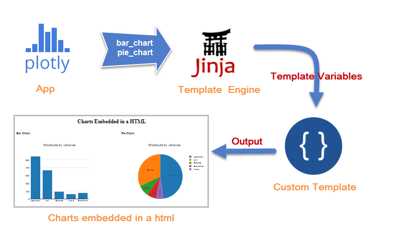
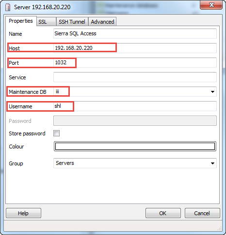
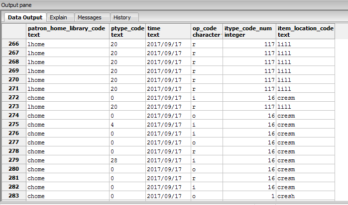
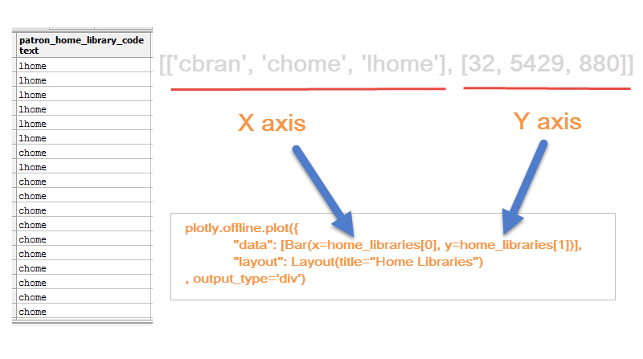

Visualizing Data:
2018 SCIUG Conference at Chapman University
Presented by Seong Heon Lee, Systems & Technology Librarian
Hugh & Hazel Darling Law Library, Chapman University
Welcome everyone. Hi, my name is SeongHeon. I am a systems & technology librarian at Chapman University Law Library.
First of all, thank you all for joining this session.
Suggested Proposal Topics
III Customer Support / new functionality
Weeding
More Polaris presentations
MySQL workshop / SQL report-writing
3rd-party tools w/III products
Best practices
User experiences (migration)
ERMS
Encore Duet
Sierra APIs Stats / create lists / other ways of reporting Linked Data
Electronic ordering
Access/User Services issues
Interlibrary Loan topics (ex. ILL basics/update)
Technology / marketing ideas and the library
When SCIUG requsted presentation proposals with a list of interests.
(CLICK)
I find that there are some interests in SQL report-writing, Sierra APIs, and Stats and other ways of reporting.
I think that I can cover those interests in one presentation.
Final Product Preview
Circulation Transaction Report
Why don't we start with looking at an outcome that you are expected to build after this presentation.
This will give us an idea to understand our goal of the presentation.
Why (1)
Sierra has Web Management Reports
How many of you are using WMR?
What is your user exprience?
Decision Center
My first question is this. Why do we need a custom report program? (CLICK) As you know, Sierra provides
with a build-in report prgoram, called Web Management Reports (WMR). How many of you are using WMR?
What is your user exprience? Personally, I do not have many words to say about it,
because I have not used it much. Preparing this presentation, I revisited the report program to make
a quick evaluation. My first impression is that it has not been improved for a long time.
UI is old and not intuitive.
Why (2)?
Who uses what?
Compare resource usages by libraries
Compare by the following criteria:
locations
patron types
item types
transaction times
etc...
Particularly, for the shown example, I started with questioning who uses what? (CLICK)
Chapman University have three branches in Sierra, Leatherby, Law Library, Brandman.
Haven't you ever been curious about how different libraries use library resources?
Our library director was curious about how Leatherby (the main library) and Law Library utilize resources.
Because the size of collections and users, Leatherby should use more resources than Law Library does.
That is a reasonable assumption. Can we prove that assumption with factual data.
Why (3)?
Why not?
Plenty of data visualization tools (Open Source)
Open Library Stacks (Direct SQL & REST API)
Customize a data report as you wish
One of the best way to answer a question "Why?" is to ask "Why Not?" (CLICK)
There are many data visualization tools available. Many of them are open sources.
We are evolving into a data-driven society. We hear so many buzz words like big data,
AI, machine learning, data analytics, data visualization, etc.
With such a high demand and interest of data, there will be more tools being developed.
Exploring data
The best motivation of all things: FUN! Fun comes from curiosity
and the discovery of things.
Contents
Plotly (Online & Offline)
Sierra SQL API
Examples (Sierra & Plotly)
Web App (Sierra & Plotly)
Now let's move on to the real part of presentation.
Here is the list of items that I will cover today. First,
We will start with Plotly library. We will learn how to create a chart online and offline.
Next, we will go through how to connect Sierra SQL API and get data from Sierra Database.
After that, combining the knowledge of both Plotly and Sierra SQL API, we will create
actual reports with Sierra and Plotly. Finally, I will show a sample web app.
What is Plotly?
A data analytics and visualization tool
Charts & Dashboard
Online and Offline
Open Source
Support multiple languages (Python, JavaScript, R, MATLAB, etc)
D3.js(SVG) and stack.gl (WebGL) for web graphics
Great API Documentation & Examples
How many people have used Plotly? How many people have heard about Plotly?
[Read Slide]
Plotly Online
Plotly examples Plotly Create page
Import data: File Upload, URL Link, SQL DB Connector
Select a chart type (bar/pie/scatter) and attibutes (X, Y axes)
Adjust chart styles
multiple traces in scatter plot
(data)
Let's look at different types of charts first.
Plotly Offline (1)
As I explained, Plotly supports many languages.
I will choose Python for Today's demo.
Plotly Offline (2)
How to embed charts in a html?
Follow the same rules
Use div for output_type, instead of filename
Hole a chart in a variable
Pass the variable to a template (Jinja2 engine)
A template file will receive multiple chart variables
In most cases, we may need embeded charts. This is how we do it.
Plotly Offline (3)

Plotly outputs a chart (bar_chart, pie_chart) as div.
We hold the charts in variables, which will be feeded
into the template engine, Jinja2. The engine plug the template variable into
a designated template file. Finally, the engine outputs
the charts in HTML as specified in the template file.
Plotly: Summary
Online & Offline
Various types of charts
Data, Layout, Other attributes
Interactive
Offline
plotly.offline.plot() function
output_type='div'
Template engine (Jinja2) and a template html
Now, we covered most basics of Plotly Online and Offline.
Sierra SQL API
PostgreSQL relational database
Sierra_view schema & 349 tables (read only)
User permisson to "Sierra SQL Access" required
Access to:
bibliographic data (bib, item, holding)
transactional data (circ_trans, fine, patron)
system parameters (location, custom codes, loanrule, properties)
By default, 5 concurrent connections per user
PGAdmin, Destkop SQL Client
Version 4
Connect to databaseRun SQL queries
Show results in tables
Creating/testing SQL queries
The easiest way to work with Sierra database is using SQL Client. PostgreSQL has
its own SQL client, called PGAdmin. You can download it with PostgeSQL database on your local PC.
[Read Slide]
Setup PGAdmin

Setting PGAdmin is straightforward. [Explain Slide]
Know Sierra Database
SierraDNA Learn the structure of Sierra database
Find a table in category and search
Detailed view of a table
ERD (Entity Relationship Diagram) view
Example: Transactions > Circulation > checkout
I just explained how to connect to Sierra Database. Now we need to learn database structure.
Find Checkouts (PGAdmin Demo)
-- Search for checkedout
SELECT pv.home_library_code, pv.ptype_code, c.checkout_gmt, c.renewal_count, pv.barcode, c.item_record_id
FROM sierra_view.checkout AS c
JOIN sierra_view.patron_view AS pv ON pv.id = c.patron_record_id
WHERE NOW() - c.checkout_gmt <= interval '3 hours'
AND pv.home_library_code = 'lhome'
Now let me show you a real query in PGADMIN.
Plotly & Sierra
Transactions by Patron Home Library
Reuse an offline script
Use Sierra data, not a dummy one
New things:
Connection & query: psycopg2
Transform Sierra data to plotly data
So far, we have learned how to create a chart with Plotly and how to query Sierra data.
Now is a time to put them together. We will create Plotly charts that visualize transactions
by Patron Home Library for the last 10 days. [CLICK]
Sierra SQL Output

You may feel a little puzzled on the data transformation part.
Why do we need to transform Sierra data before using it for Plotly?
Plotly X Y Axes

I have chart_data function that takes care of this business.
The function reads through each row of the patron_home_library_code column
and count record by patron_home_library.
Embed Sierra Charts
Can we embed multiple charts in one HTML page?
Use the same SQL output from circ_trans
Run data transformations on each column
Pltoly option: output_type='div'
Pass chart outputs to the template engine
Multiple charts will be embedded as instructed in a template file
Can we present multiple charts in one html document? [CLICK] Yes, we can.
We can store charts in div and pass the charts into a template using Jinja2 template engine.
Interactive Program
Can we specify days and transaction types?
Python sys.argv - read user inputs from terminal
User Inputs:
days
transaction types(o i f r)
ouput filename
python sierra_chart_embed.py 60 oi sierra_interactive.htmlOur program created a transaction report with multiple charts. The SQL query retrieved
data of four types transactions (i, o, f, r) and in the last 10 days. What about if you want to find
only checkout (o) and checkin (i) and in the last 5 days? [CLICK] Of course, you can change the sql query accordingly.
However, it is not a good idea to modify a sql query inside the program whenever we need a different serach.
Sierra SQL API & Plotly: Summary
Plotly Python Offline
SierraDNA to learn Sierra database
PGAdmin to run test queries
Python database adapter (psycopg2)
Transform data for Plotly
Template engine Jinga2 to embed multiple charts
Interactive program with user inputs
More Ideas...
Create the reports of special purposes
Automatically run and deliver reports (scheduler, clone)
Explore more data from Sierra (collections, circulation, acquisition)
Collect non-Sierra data (counter, space usages, research/reference)
Data from other APIs (Googlesheet, LibGuides)
Plotly's different charts (map, bubble, heatmap)
Data is everywhere.
We can ask, "Where is data?" "What can we do with it?" "How should we present it?"
What is next?
[ Library Data Group ]
Seong Heon Lee, selee@chapman.edu
"What is next?" We may form "Library Data Group". We can explore various
ways of using library data and create analytic tools. So, if you are interested in,
please send me an email. I think we can grow learning each other.
THANK YOU.
My daughter said that the last slide is very important.
It must be pretty and meaningful.
Here we go. THANK YOU.